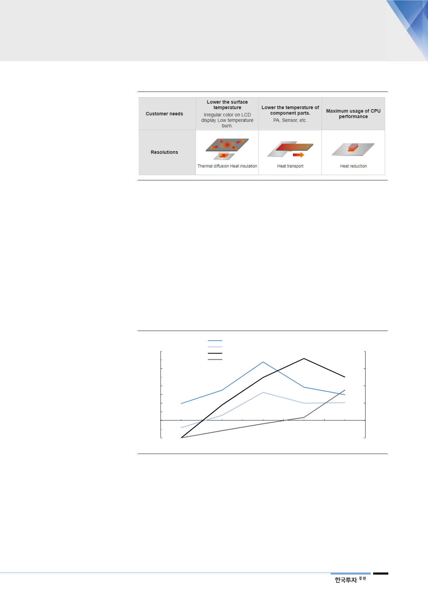

[그림 20] 방열시트의 사용 예: 열 분산 및 감소 효과
방열시트용 PI필름 공급이
부족해 생산하는 대로
팔리고 있음
PI필름 경쟁업체들이
늘어난 수요 대응 위해
증설을 계획중
자료: Panasonic, 한국투자증권
잠재적인 수요는 많은 반면 공급량은 제한적이다. SKC코오롱PI는 방열시트용 PI
필름 수요확대를 예상해 올해 2월 연간 600톤의 capacity 증설을 완료했다. 현
재 PI필름 capacity는 회사추산 2Q18에 연간 3,300톤, 분기당 825톤 수준이다.
그럼에도 1Q18에 908톤을 출하해 실제 생산량인 837톤보다 8% 많이 판매했는
데, 재고물량도 판매하는 것으로 추정된다. 1Q18 기준 재고는 역대 최소인 156
억원으로 2Q17 재고 268억원 대비 크게 감소하였다. 결론적으로 방열시트 최종
소비자(스마트폰업체)와 생산업체의 수요가 크게 증가했을 것으로 추정하는데 1
분기 전사 QoQ 매출액 증가액 106억원 중 66%(70억원)가 방열시트용 PI필름
매출이기 때문이다.
[그림 21] 경쟁업체들은 생산능력 증가가 늦어 방열시트 수요 증가에 대응하지 못함
(%)
80
70
60
50
40
30
20
10
0
(10)
(20)
2015
방열시트향 매출액 증가율(좌)
FPCB향 매출액 증가율(좌)
SKC코오롱PI 생산가능량 증가율(우)
전세계 생산가능량 증가율(우)
2016
2017
2018F
(%)
25
20
15
10
5
0
2019F
자료: 한국투자증권
방열시트용 PI필름 경쟁업체의 증설은 올해 들어 차례로 계획되고 있다. Dupont
은 2018년 5월에 동사 PI필름 capa를 20% 증설하겠다고 발표했으며 Kaneka
는 2017년 사업보고서에서 증설을 검토 중이라고 언급했다. 방열시트용 PI필름
시장 공급량이 수요량에 미치지 못하는 shortage 상태인 것으로 추정된다. SKC
코오롱PI는 경쟁사 중 가장 먼저 올해 1월 라인효율화를 통해 600톤을 증산했고
증설된 물량만큼을 전부 중국 스마트폰업체향으로 공급한 것으로 파악된다. 추가
생산능력은 2019년초와 2020년말 각각 연 600톤이 추가 증설된다.
13